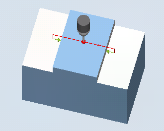
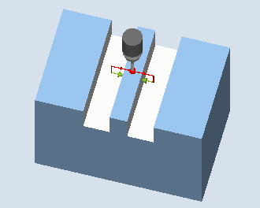

This measuring variant can be used to measure a rib on a workpiece. The rib width is measured and the rib center point is determined.
Measurements at an inclined rib are also possible. To do this, an angle corresponding to the actual angularity of the rib position should be entered into the parameterizing screen form. Probing at the rib edge always takes place at right angles. A protection zone can be defined at the side of the rib.
With the "3D probe with spindle reversal" measuring method, measurement is performed in the axes of the plane as differential measurement. Two complete measurements of the rib are automatically carried out one after the other, one with a spindle position of 180 degrees, and one with 0 degrees. The special procedure for this measurement permits the use of an uncalibrated multi-directional probe. However, the correct tool radius of the probe must be determined once by calibrating the probe. Probe types 712, 713 and 714 are not suitable for this purpose. A positionable spindle is mandatory.
With the "Align 3D probe" measuring method, the switching direction of the probe is always aligned to the current measuring direction. This function is recommended when high demands are placed on the measuring accuracy. Probe types 712, 713 and 714 are not suitable for this purpose. A positionable spindle is mandatory.
The measurement result (measurement difference) can be used for the following:
Correction of a WO so that the workpiece zero is in relation to the groove center point.
Offset of a tool
Measurement without offset
An extended tool offset in the replacement tools as well as additive and setup offsets are also possible. Empirical values can generally be included in the calculations for tool offsets.
One point at each of the opposite edges of the rib are measured based on the selected measuring axis. The positive direction of the geometry axis is measured first. From the two actual positions, taking into account the calibration values, the rib width is calculated. The position of the rib center as workpiece zero is determined corresponding to the work offset selected to be corrected.
With the selection Setpoint center point "YES", the position of the rib center can be defined as workpiece zero through setpoint specifications.
The measured difference of the rib width is used as basic variable for a tool offset, the position of rib zero point, as basis of a work offset.
|  Measure: Rib (CYCLE977) |  Measure: Rib with a protection zone (CYCLE977) |
The probe must be active as tool.
Tool type of the probe:
3D multi probe (type 710)
Mono probe (type 712)
| Note |
The following measuring methods are only possible in the axes of the plane:
The probe types 712, 713 and 714 generally cannot be used for these measuring methods. |
| Note |
A SPOS-capable spindle is needed for the functions "3D probe with spindle reversal", "Align 3D probe", or for probe types 712, 713, and 714. |
The probe should be positioned with the probe ball center in the measuring axis approximately above the center of the rib. With the entered infeed path, it must be ensured that from the starting height the required measuring height at the rib is reached.
| Note |
If too large a measurement path DFA has been selected so that the protection zone is violated, then the distance is reduced automatically in the cycle. However, there must be sufficient room for the probe ball. |
The probe ball is centered above the rib at the height of the measuring cycles starting position.
See also:
Measure: Rib (CYCLE977)